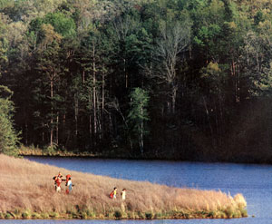
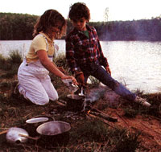
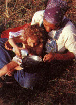
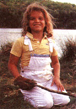
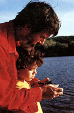
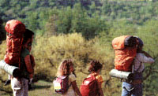

Issue # 112 - July/August 1988
In which a pair of outdoors-loving parents finally discover the secret of family wilderness success.
I thought I'd never figure it out. I mean, you can go backpacking with one small child or even canoe camping with two. But three? How do you get away from civilization (including crowded campgrounds) if you have a trio of kids to cart along?
That was our problem. In the years before we accepted irrevocable adulthood (i.e., became parents), my wife, Becky, and I hiked and paddled in the backcountry every chance we got. When baby Nate joined us, we just stuffed him in a backpack child carrier and sallied forth. We didn't hike quite as far, and our shoulders ached a bit, but we still enjoyed "real" wilderness experiences.
Then Jesse graced our family, and since we couldn't carry two kids in addition to all our gear, we tied extra seats in the middle of our canoe and paddled into the wilderness.
But when Samantha blessed our nest, well . . . um . . . what could we do? The answer, when it finally came to me, was so simple, elegant and enjoyable that I wished we'd done it long before. It was to . . .
Base Camp
. . . that is, hike a short distance into the woods, pitch the tent and stay put. The idea of base camping goes against my strongest backpacking instincts-that "let's see what's around the next bend" urge that's driven me over many a series of hilltops.
But my young children have never had the same urge to leave lots of footprints. They never liked riding or walking mile upon mile. Instead, they always wanted to play alongside the trail or river-or, best of all, in camp. The more trips Becky and I took with them, the more we responded to their needs and the shorter our journeys actually became. (Once we hiked four days and covered only 14 miles.) Finally, the essential purity of what was really my children's idea took root. Why hike or canoe for endless miles, why work in the woods, when you can just settle down in one place and play, explore and relax?
We tried base camping recently, and it was an unqualified success. Besides offering the pleasures that came from staying in one outdoor spot, base camping cut wilderness housekeeping chores way down: We didn't have to break camp every morning and set up a new one each night.
So, if you have one, two or more children-heck, even if you don't have any -I suggest you give base camping a try. If you're leery of possible boredom, do it for only one day of an extended trip. You may just end up discovering that the attempt to enjoy nature while plodding along a hiking trail is almost like birdwatching on an interstate.
Our Trip: Day One
The worst part of any outdoor trip has got to be those frantic hours spent packing for it. It takes us way too long to assemble our food, gear and clothes, but, amazingly, it all fits in our packs. Mine weighs in at 40 pounds and Becky's at 38. Eight-year-old Nathan's carrying 14 pounds, five-year-old Jesse is toting 10, and two-year-old Samantha-well, if she'll just carry herself, we'll be overjoyed.
We get to our starting point, the dead end of Lick Creek Road in North Carolina's Pisgah Forest, a little late in the day. So we quickly shoulder our loads and head off.
I could swear the walk to our intended campsite isn't more than half a mile, but it seems to take forever. First, Nate doesn't like the way his pack (a modified schoolbook bag) fits, so we have to adjust it again and again. Then Jesse decides she doesn't like wearing her pack (ditto) at all, so she swings it freely in her arms, scattering food along the trail. And Sammie? Well, she is walking on her own, but mighty slowly. Once she even grabs a sleeping bag from her sister's pack and tries to horse-ride it down the trail!
When we finally reach a nice campsite along Lick Creek itself, Becky and I scurry around to get the tent up, firewood in and food cooking before dark. We really made a mistake by starting out so late-rushing around doesn't help anyone's spirits. But the finished black bean soup and foil-wrapped, coal-baked "beef stew" definitely improve our mood.
During supper, I tell Nate and Jesse that it will be their job to start tomorrow night's fire, so they decide to get in some practice now. They don't have much luck (it's pretty hard to build a fire in the dark), but enjoy trying.
Not long after supper and campfire practice are over, we collapse into our roomy four-person tent. Jesse's a bit scared at first, but soon she's out like a flashlight. I lie awake awhile regretting our late start, but those thoughts are soon replaced by anticipation of tomorrow, and then by sleep.
Day Two
One of the things that delayed us yesterday was stopping to buy Nathan a Zebco fishing outfit-a spin-casting reel with an enclosed spinning mechanism. It was a birthday present for a boy with a bad case of fishing fever. The Zebco's simple construction makes it a great reel for children. Still, it's not Nate-proof. In fact, he tangled up some line just carrying the rod into camp. So my second morning chore (after starting a breakfast fire) is trying to unsnarl the nylon conundrum. I lose. Time for pocketknife surgery.
Nate and Jesse help me forage enough squaw wood (an old Indian term for firewood you can haul and break by hand) for our future fires. Then we decide to pack lunch and hike about a mile to an upstream reservoir. Our group journeys all of 100 yards before Nate finds a pool he's positive teems with trout. He casts his line a few times and catches a big, gleaming . . . tangle. I enter unsnarling mode.
TIPS FOR FAMILIES
1. Develop an inside contact. It's kind of hard to find nice camping spots that are within a short walk of your vehicle yet not overcrowded with other people. Here's a family finder's tip for national forests. Contact the Ranger District Office for that forest, and ask to speak to a forester or forestry technician. (Have a good topographic map of the area with you when you do so.) Foresters spend most of their time out in the field, so they often have the special inside (or rather, out side) information you need.
2.Be prepared. If you're a bit green at woodland adventuring, join an outing club, sign up for a guided family trip or practice several short excursions on your own. A fine breaking-in guide is the Sierra Club handbook Starting Small in the Wilderness ($11.95, Sierra Club Store Order, 730 Polk St., San Francisco, CA 94109).
3. Camp in the best possible weather. Remember: If the kids suffer, you suffer.
4. If possible, camp near water. It offers seemingly unlimited possibilities for play and exploring.
5.Take lots of dry clothes. This is the corollary of rule number four. (Don't skimp on the first-aid gear, either.)
6.Don't forget the old distraction ploy. If you do have to cover some distance and the kids get unhappy, make up a story (a long story), sing songs or talk about anything other than hiking.
7. Go! All five ofus Stones think these trips are wonderful. They give us the chance to enjoy each other without all the distractions and chores of home. Each of us gets to make his or her own closer contact with nature. And, every trip, I am surprised anew by how happily children play in the outdoors and how helpful and responsible they become when directly exposed to basic human needs.
After a while (and no bites), we move on, but we never get very far before Jesse wants to play in the creek, Sam decides to fiddle with some woodland plants, and-most often-my ever-determined son throws another line.
At one spot, I stop to relieve myself. Seeing me gives Nate the urge, so he comes over to join in. Seeing Nate and me gives Jesse the urge, so she joins in. Seeing Nate, Jesse and me gives Sammie the urge, so she joins in, too. This is a big moment (as anyone who's ever gone through toilet training will understand), so Nate, Jesse and I spontaneously cheer, "Yay, Sammie!"
Sammie looks up at what we're doing and cheers back, "Yay, Daddy! Yay, Natie! Yay, Jesse!"
As we walk and stop, walk and stop, the age-old problem re-emerges. Becky and I want to hike on to the reservoir, but the kids complain about every step we take.
Finally, Becky picks Sammie up and goes ahead, while I stay to do pool duty. Nate soon creates a world-record tangle. I struggle with the tiny knots in the monofilament line (thinking that now I know why my dad never took me on his fishing trips) and start to hatch a headache.
Nate's long since gone to play in the creek with Jesse, who's invented a wonderful water version of follow the leader. They urge me to join in, and-at long last-I wise up, abandon the line and plunge into the creek. A simple decision, and yet for me, the turning point of the trip. Everything starts going better. We frolic for a long time (the real challenge in this game is mustering up the courage to get in that chilly water). Eventually we all feel ready to move on, and-lo and behold-reach the reservoir in 100 yards.
Pleasant hours of eating lunch, exploring the lake, picking bouquets and playing below the dam follow. No-nibble Nate slacks off on fishing duty. I forget my let'sget-going urge. We all relax in the woods.
Back at camp (nice and early this time), Nate and Jesse lay a tipi of twigs on a small mound of birch bark shavings they'd collected, put it to the test and-hooray!-start a one-match fire. Nate cooks up a pot of snacktime cocoa. After that, Bec and the youngest doze in the tent, while we three water sprites go back to swimming and rock skipping and vine swinging and salamander catching.
After supper, we lie around the fire, sipping cocoa, telling stories and watching the coals pulse, the tiny bursts of sparks fly skyward, the silhouetted trees loom overhead. When exhaustion hits, we all turn in.
Day Three
The two biggest mistakes we've made on this trip were starting it too late and, now, ending it too early. It's plain the kids would be happy to stay another day, but I made plans to get back to work. I ask them what they'd do if we stayed, and their answer is that they'd simply play in the same places we played yesterday. They even say that next summer they want to camp again at exactly the same spot. (How many times will they have to counter my desire to always push on to somewhere new before I finally get the message?)
Sammie's particularly unexcited about walking out. I carry her for a while, then suggest that now it's her turn to walk. Sam's pretty verbal with her opinion of that idea (and, like Tarzan, her cries can fill the woods), so Noble Nate and Generous Jesse volunteer to take turns carrying her. We've purposely made the kids' packs even lighter than before (I'm learning that extra weight on us beats extra hassle from them), and I don't want Nate and Jesse getting tuckered out from lugging Sam. So Becky and I end up bearing the babe.
Surprisingly soon, we get to the car, throw our gear in the back and drive off: Already, we're all talking nostalgically about our venture and planning a four-day outing for next year.
Looking back, I guess Jesse best summed up the joys of base camping. We were playing at the reservoir the second day when a dozen hunchbacked hikers from Duke University abruptly marched up and halted. A few stared intently at their plastic-covered topo maps. The rest wiped their brows and peered around for their next turnoff: The group didn't stay more than four minutes, but before they tromped off, Jesse engaged one young woman in a short conversation.
"You hiking?" my daughter asked her. The woman shifted her pack and nodded. Jesse just smiled happily and said, "We're staying!"
|
 The one-match kids, Jesse and Nate, fix soup (left), while Becky and Sammie (above) play with pots. Father and son (right) wrestle with a reel. |
 |
 |
|
 |
 |
 |